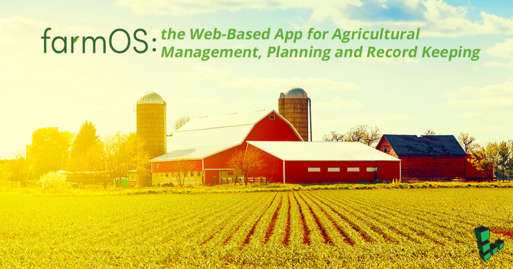
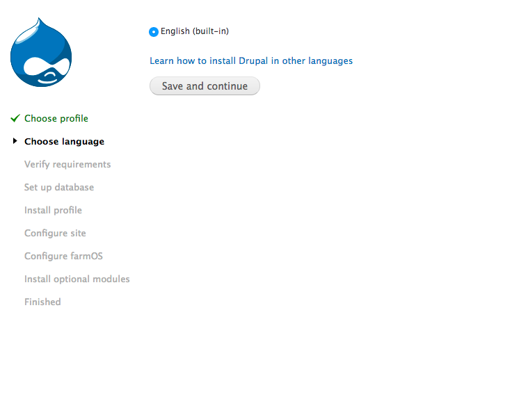
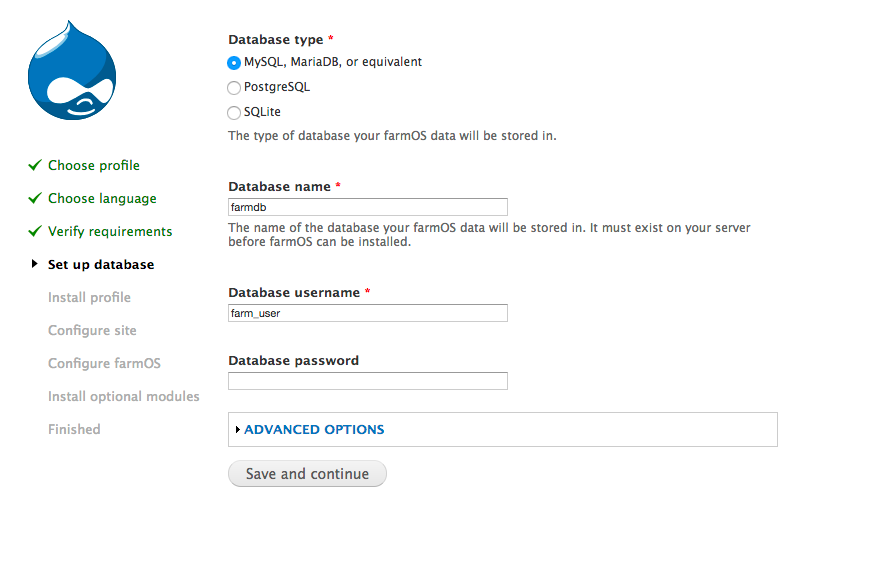
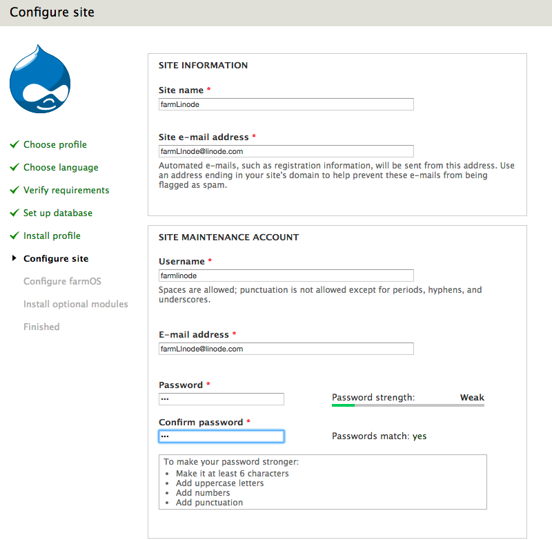
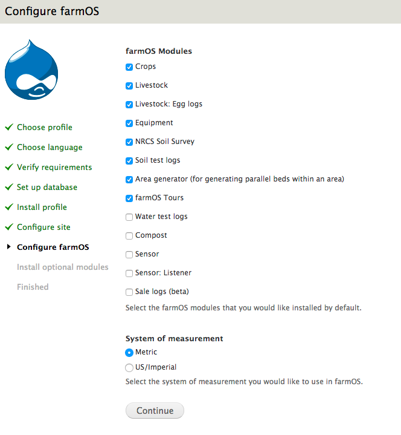
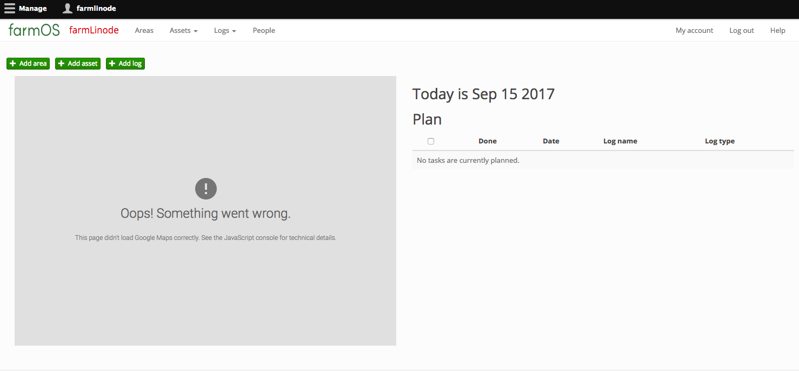
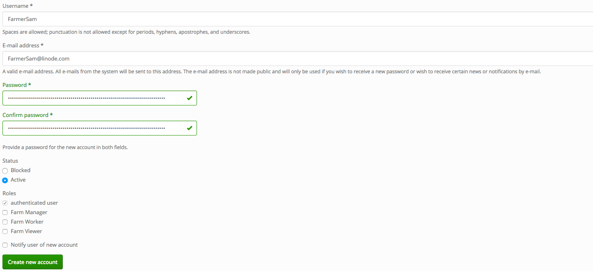
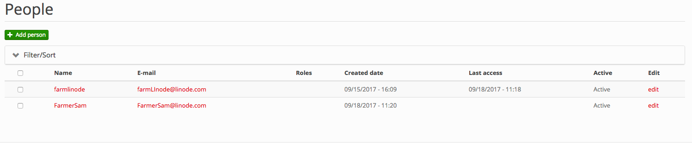

How to Install FarmOS - a Farm Recordkeeping Application
Updated by Linode Written by Angel G

What is FarmOS?
FarmOS is a one-of-a-kind web application that enables farmers to manage and track all aspects of their farm. Built atop Drupal and licensed under GPL V.3, FarmOS is a great free-software solution for farms to explore.
This guide explains how to install, setup and host your own FarmOS web app on a Linode.
Before You Begin
Familiarize yourself with our Getting Started guide and complete the steps for setting your Linode’s hostname and timezone.
This guide will use
sudowherever possible. Complete the sections of our Securing Your Server to create a standard user account, harden SSH access and remove unnecessary network services.Update your system:
sudo apt-get update && sudo apt-get upgradeInstall a LAMP Stack
Drupal needs to be built atop a web-server. The LAMP stack provides a quick and easy solution to serve web applications, like Drupal. Install the LAMP stack using our guide on installing a LAMP stack.
MySQL Setup
After installing the LAMP Stack, you need to create a database for Drupal to use.
Log into the root account of your database:
mysql -u root -pCreate a database and a database user:
CREATE DATABASE drupaldb; CREATE USER DRUPAL_USER@LOCALHOST IDENTIFIED BY 'PASSWORD';Grant privileges to the user:
GRANT ALL PRIVILEGES ON drupaldb.* TO DRUPAL_USER@LOCALHOST;
Optimize PHP
Download the following PHP libraries:
sudo apt install php-gd php-xml php-xmlrpc
sudo apt install php-mysql phpmyadmin
If prompted to automatically configure a database, choose “yes.”
Install FarmOS
FarmOS is bundled as a Drupal distribution, so you do not need to install Drupal BEFORE installing FarmOS. The Drupal installation is bundled in. FarmOS should be installed in /var/www/html/example.com/public_html/FarmOS.
Download the FarmOS distribution package:
wget https://ftp.drupal.org/files/projects/farm-7.x-1.0-beta15-core.tar.gzUncompress the file:
tar -zxvf farm-7.x-1.0-beta15-core.tar.gzInstall FarmOS, and move the contents of
farm-7.x-1.0-beta15to/var/www/html/example.com/public_html/FarmOS.sudo mv -r farm-7.x-1.0-beta15/* /var/www/html/example.com/public_html/FarmOSMake sure the permissions for
sites/defaultandsites/default/settings.phpare set correctly:cd /var/www/html/example.com/public_html/FarmOS sudo chmod 777 ./sites/default sudo cp ./sites/default/default.settings.php ./sites/default/settings.php sudo chmod 777 ./sites/default/settings.phpIf you’ve configured everything correctly, you can now point your web browser to your Linode’s public IPaddress/FarmOS.
192.0.0.1/FarmOS
Configure FarmOS
FarmOS will configure Drupal and itself at the same time:
The first screen you will encounter asks you to choose a profile and a language:

Drupal checks if the installation is correct in the Verify requirements section. Then, it will move to configuring the database. In this section you should input the information from the database built earlier in this tutorial:

Once FarmOS hooks into the database, you will need to configure your FarmOS site. This is where you will define the name and the main user account:

The next section is going to ask you what modules you want to install. You can install and uninstall modules at any time, but this is a chance to install personalized modules that will work for your specific type of farm.

Finally, after installing the modules, you will be dropped into the FarmOS dashboard:

After the installation has finished, you may want to reset your file permissions to avoid security vulnerabilities:
sudo chmod 644 sites/default sudo chmod 644 ./sites/default/settings.php
Add Users
To add users to your FarmOS distribution, you can do so from the People tab under Manage.

After each user is created, use the people tab, to verify success:

Next Steps
Registering a Domain Name for FarmOS
If you want to register a domain name (e.g., yourfarm.com), check out our guide on the DNS Manager and add your FQDN to the Linode Manager. A FQDN will provide you, and the people who plan on using FarmOS, the ability to navigate to a URL, instead of your Linode’s public IP address. If you plan on using FarmOS internally, you can skip this step.
Generate a Google API Key
FarmOS can interface with GoogleMaps. You need a GoogleAPI key to use this feature. The FarmOS official documentation has a section about using GoogleMaps in its docs. Interfacing with GoogleMaps allows you to save certain geographical areas into FarmOS. When creating FarmOS projects and tasks, you can use the Google Maps API to pinpoint where the task takes place.
Join our Community
Find answers, ask questions, and help others.
This guide is published under a CC BY-ND 4.0 license.